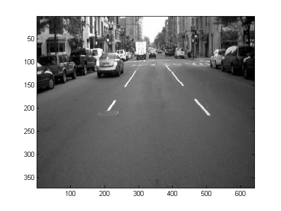

Lane Marking Identification
One component of future luxury automobile safety systems is warning drivers that they are drifting between lanes. To do this, it is first necessary to identify where the lanes are. In this example, we will look at identifying the lanes from a image of a road.
Contents
Setup
clear
Read image
Let's first read in this JPEG image from the current directory by double-clicking.
street1 = imread('street1.jpg');
Display image
First of all, in MATLAB 7, we can now plot any workspace variables just by selecting it and choosing a plot type. Here we see a frame from a camera looking at a road scene including the lanes we need to identify.
imagesc(street1); shg
Scale image
This image is a little too dark so let's brighten it. However, you will notice that it contains uint8 data. Now for the first time we can perform arithmetic on integers and singles. As well as resulting in up to 8x less memory used than if the data was expanded to doubles, it can result in up to 8x faster executions.
scaled=street1*1.2; image(scaled);
Thresholding image
Next, we will create a binary image by comparing it to a threshold value. We will use a new feature in MATLAB 7 called anonymous functions which let you create functions at the command line or in scripts with no associated M-file.
level = 220; binary = scaled>level; imagesc(binary);
Remove the noise
We will now use an Image Processing Toolbox function to remove all small groups of pixels.
binary = bwareaopen(binary,100);
imagesc(binary)
hold on
Find the boundaries of objects
%... then another function to find the boundaries of all the objects in the image. Then we display those in green. [B,L] = bwboundaries(binary,'noholes'); % Plot boundaries for K=1:length(B) boundary = B{K}; h(K)=plot(boundary(:,2), boundary(:,1), 'g', 'LineWidth', 2); end % Extract statistics stats = regionprops(L,'MajorAxisLength','MinorAxisLength');
Find lanes and delete non-lane objects
We can detect the lanes by testing each object and deleting ones that are not lane-shaped i.e. long and thin. This function findlanes uses a major new feature in MATLAB 7 where you can nest functions inside others, where the inner function can see the workspace of its parents.
lanes=findlanes(B,h,stats);
hold off;
Place lanes on original image
Finally we will display the original image and plot the lanes on it
imagesc(street1); hold on for K = 1:length(lanes) plot(lanes{K}(:,2), lanes{K}(:,1), 'g', 'LineWidth', 2) end hold off